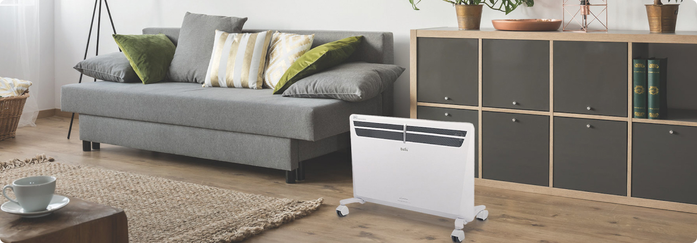

Багатотарифні лічильники електроенергії — це головна зброя українців проти постійного підвищення тарифів.
Багатотарифні лічильники електроенергії — це головна зброя українців проти постійного підвищення тарифів. Вони дозволяють економити при незмінному обсязі споживання електроенергії — користувачеві потрібно лише оптимізувати час роботи своїх електроприладів.
У цій статті ми поговоримо не про вигоди переходу на диференційований облік електроенергії. Про це і так сказано багато. Ми поговоримо про труднощі, з якими можуть зіткнутися абоненти, а саме: як зняти показники лічильників світла і як самостійно розрахувати оплату за світло.
В однотарифних приладах обліку все зрозуміло: дивимося цифри на табло, віднімаємо значення попереднього місяця і множимо на діючий тариф. Але як бути, якщо тарифів два або навіть три?
Лічильник світла «день/ніч» рахує електроенергію одночасно в двох зонах:
Денна: з 7:00 до 23:00;
Нічна: з 23:00 до 7:00.
Сенс у тому, що вночі навантаження на енергосистему менше, тому і тарифікується електроенергія з коефіцієнтом 0,5, тобто в два рази дешевше.
Тому, якщо у вас є можливість змістити пік електроспоживання на ніч (наприклад, запланувати прання, роботу мультиварки тощо), встановлення такого приладу обліку буде вигідним і швидко окупиться.
Але давайте повернемося до головного питання: як знімати показання двозонного лічильника. Насамперед для цього буде потрібно дізнатися, яким маркуванням на ньому позначені тарифи. Достовірну інформацію з цього приводу дасть Інструкція з експлуатації приладу.
Лічильник світла «день/ніч» рахує електроенергію одночасно в двох зонах:
Денна: з 7:00 до 23:00;
Нічна: з 23:00 до 7:00.
Я, Сергій Дідик, як очільник компанії “НАШГАЗ” предсталяю для вас компанію ”НАШГАЗ”, моя міссія - надати доступний газ для населення та зощаджувати гроші завдяки розробленої сітки тарифів спеціально для вас.
Я заснував компанію яка надає вам можливість змінити постачальника газу та обирати тариф більш вигідні для вас. Разом з НАШГАЗ ви можете насолод
“Я, Сергій Дідик, як очільник компанії “НАШГАЗ” предсталяю для вас компанію ”НАШГАЗ”, моя міссія - надати доступний газ для населення та зощаджувати гроші завдяки розробленої сітки тарифів спеціально для вас”
Я, Сергій Дідик, як очільник компанії “НАШГАЗ” предсталяю для вас компанію ”НАШГАЗ”, моя міссія - надати доступний газ для населення та зощаджувати гроші завдяки розробленої сітки тарифів спеціально для вас.
Я заснував компанію яка надає вам можливість змінити постачальника газу та обирати тариф більш вигідні для вас. Разом з НАШГАЗ ви можете насолод
“Я, Сергій Дідик, як очільник компанії “НАШГАЗ” предсталяю для вас компанію ”НАШГАЗ”, моя міссія - надати доступний газ для населення та зощаджувати гроші завдяки розробленої сітки тарифів спеціально для вас”
Я, Сергій Дідик, як очільник компанії “НАШГАЗ” предсталяю для вас компанію ”НАШГАЗ”, моя міссія - надати доступний газ для населення та зощаджувати гроші завдяки розробленої сітки тарифів спеціально для вас.
Я заснував компанію яка надає вам можливість змінити постачальника газу та обирати тариф більш вигідні для вас. Разом з НАШГАЗ ви можете насолоджуватися вигідними тарифами. Ми використовуємо соціальний підхід в роботі, який дозволяє вам обирати вигідні умови кожному
Показання електронного 2- і 3-тарифного лічильника знімаються за одним принципом. У більшості випадків кількість використаних кіловат показується на табло по черзі, а якщо цього не відбувається — потрібно скористатися кнопкою «Введення» для ручного перемикання.
Стати клієнтом НАШГАЗ